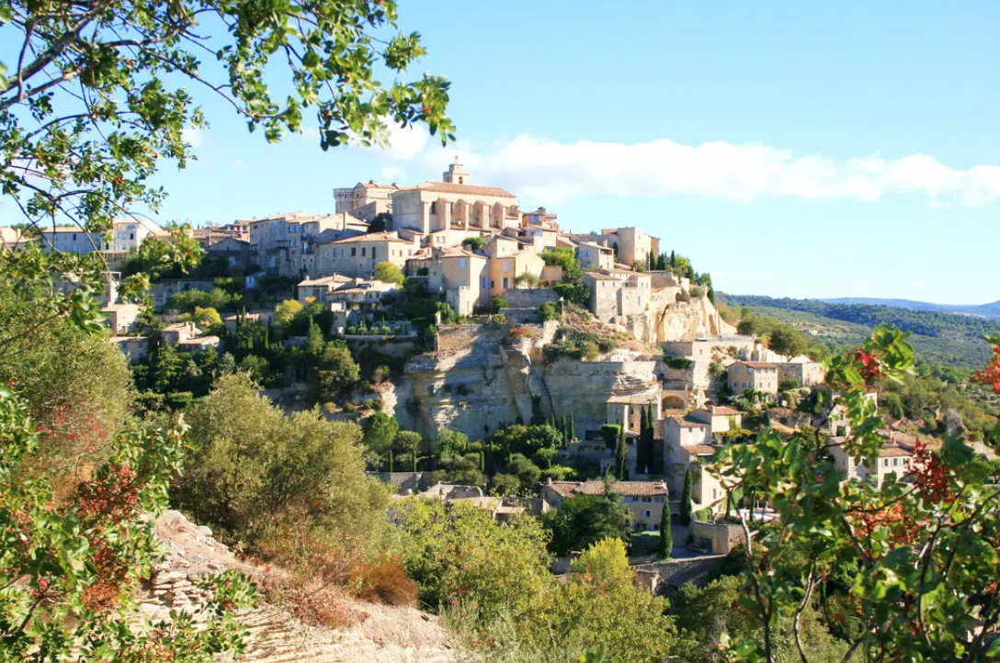
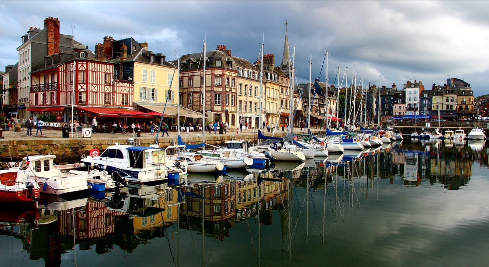

Les 3 plus beaux villagesLa France regorge de merveilles, alors pourquoi ne pas partir découvrir ces villages qui font la
réputation du pays ! Voici 3 des plus beaux villages de France.
|
|
|  |
Au cœur du Mont du Vaucluse et du Parc Naturel du Luberon se trouve le petit village de.
Gordes. Gordes n’est pas seulement l’un des plus beaux villages de France par sa beauté, il l’est également pour
son histoire, sa richesse architecturale et patrimoniale.
|
Gordes, Vaucluse |
|
|
Le village d'Eguisheim n’est pas seulement l’un des plus beaux villages de France il est également l’un
des plus fleuris. C’est également le berceau du vignoble alsacien, il est implanté sur les douces collines
sur lesquelles sont plantées de nombreuses vignes. Ce petit village aura de quoi séduire les épicuriens
et les amoureux de belles pierres
|

|
Eguisheim, Alsace |
|
|  |
Barfleur se classe parmi les plus beaux villages de France est un port depuis le Moyen-Âge. Ce lieu a
traversé les temps et fait partie d’un des villages qui fut libéré par les américains en Juin 1944. C’est un
village à découvrir pour le charme de ses vieilles bâtisses en granit et son histoire.
|
Barfleur, Manche |
|